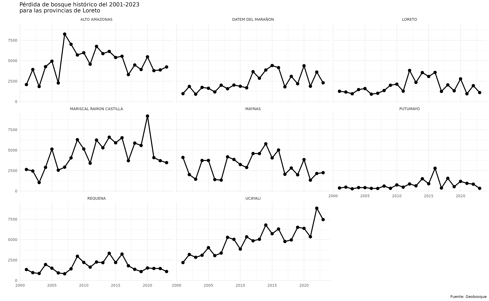

1. Introduction
This package aims to provide R users with a new way of accessing official Peruvian cartographic data on various topics that are managed by the country’s Spatial Data Infrastructure.
By offering a new approach to accessing this official data, both from technical-scientific entities and from regional and local governments, it facilitates the automation of processes, thereby optimizing the analysis and use of geospatial information across various fields.

2. Package installation
install.packages("geoidep")Also, you can install the development version as follows:
install.packages('pak')
pak::pkg_install('ambarja/geoidep')
library(geoidep)
#>
#> ── Welcome to geoidep ──────────────────────────────────────────────────────────
#> ℹ geoidep is a wrapper that allows you to download cartographic data for Peru from R.
#> Currently, `geoidep` supports the following providers:
#> ✔ Geobosque
#> ✔ INEI
#> ✔ Midagri
#> ✔ Sernanp
#> ℹ For more information, please use the `get_data_sources()` function.3. Basic usage
providers <- get_data_sources()
providers
#> # A tibble: 73 × 7
#> provider category layer layer_can_be_actived admin_en year link
#> <chr> <chr> <chr> <lgl> <chr> <chr> <chr>
#> 1 INEI General departamen… TRUE Nationa… 2019 http…
#> 2 INEI General provincia TRUE Nationa… 2019 http…
#> 3 INEI General distritos TRUE Nationa… 2019 http…
#> 4 Midagri Agriculture vegetation… TRUE Ministr… 2018 http…
#> 5 Midagri Agriculture agricultur… TRUE Ministr… 2024 http…
#> 6 Midagri Agriculture oil_palm_a… TRUE Ministr… 2016… http…
#> 7 Midagri Institucional experiment… TRUE Ministr… 2024 http…
#> 8 Geobosque Forest stock_bosq… FALSE Ministr… 2001… http…
#> 9 Geobosque Forest stock_bosq… TRUE Ministr… 2001… http…
#> 10 Geobosque Forest stock_bosq… TRUE Ministr… 2001… http…
#> # ℹ 63 more rows
layers_available <- get_providers()
layers_available
#> # A tibble: 4 × 2
#> provider layer_count
#> <fct> <int>
#> 1 Geobosque 5
#> 2 INEI 3
#> 3 Midagri 4
#> 4 Sernanp 614. Download Official Administrative Boundaries by INEI
# Region boundaries download
loreto_prov <- get_provinces(show_progress = FALSE) |>
subset(NOMBDEP == 'LORETO')
# Display the first 10 rows of the data frame `departaments`
head(loreto_prov)
#> Simple feature collection with 6 features and 8 fields
#> Geometry type: MULTIPOLYGON
#> Dimension: XY
#> Bounding box: xmin: -77.82596 ymin: -6.14773 xmax: -69.94904 ymax: -0.03860597
#> Geodetic CRS: WGS 84
#> id OBJECTID CCDD CCPP NOMBDEP NOMBPROV SHAPE_Length
#> 136 136 136 16 02 LORETO ALTO AMAZONAS 9.955533
#> 137 137 137 16 07 LORETO DATEM DEL MARAÑON 11.493679
#> 138 138 138 16 03 LORETO LORETO 13.602250
#> 139 139 139 16 04 LORETO MARISCAL RAMON CASTILLA 15.113580
#> 140 140 140 16 01 LORETO MAYNAS 14.501777
#> 141 141 141 16 08 LORETO PUTUMAYO 20.443604
#> SHAPE_Area geom
#> 136 1.569481 MULTIPOLYGON (((-76.30752 -...
#> 137 3.881998 MULTIPOLYGON (((-76.49832 -...
#> 138 5.574816 MULTIPOLYGON (((-75.74592 -...
#> 139 3.054652 MULTIPOLYGON (((-72.08996 -...
#> 140 6.197942 MULTIPOLYGON (((-75.24086 -...
#> 141 3.725588 MULTIPOLYGON (((-75.10004 -...
# Defined Ubigeo
loreto_prov[["ubigeo"]] <- paste0(loreto_prov[["CCDD"]],loreto_prov[["CCPP"]])
loreto_prov
#> Simple feature collection with 8 features and 9 fields
#> Geometry type: MULTIPOLYGON
#> Dimension: XY
#> Bounding box: xmin: -77.82596 ymin: -8.715191 xmax: -69.94904 ymax: -0.03860597
#> Geodetic CRS: WGS 84
#> id OBJECTID CCDD CCPP NOMBDEP NOMBPROV SHAPE_Length
#> 136 136 136 16 02 LORETO ALTO AMAZONAS 9.955533
#> 137 137 137 16 07 LORETO DATEM DEL MARAÑON 11.493679
#> 138 138 138 16 03 LORETO LORETO 13.602250
#> 139 139 139 16 04 LORETO MARISCAL RAMON CASTILLA 15.113580
#> 140 140 140 16 01 LORETO MAYNAS 14.501777
#> 141 141 141 16 08 LORETO PUTUMAYO 20.443604
#> 142 142 142 16 05 LORETO REQUENA 13.934825
#> 143 143 143 16 06 LORETO UCAYALI 10.879411
#> SHAPE_Area geom ubigeo
#> 136 1.569481 MULTIPOLYGON (((-76.30752 -... 1602
#> 137 3.881998 MULTIPOLYGON (((-76.49832 -... 1607
#> 138 5.574816 MULTIPOLYGON (((-75.74592 -... 1603
#> 139 3.054652 MULTIPOLYGON (((-72.08996 -... 1604
#> 140 6.197942 MULTIPOLYGON (((-75.24086 -... 1601
#> 141 3.725588 MULTIPOLYGON (((-75.10004 -... 1608
#> 142 4.113391 MULTIPOLYGON (((-73.42087 -... 1605
#> 143 2.432388 MULTIPOLYGON (((-74.82778 -... 16065. Working with Geobosque data
my_fun <- function(x){
data <- get_forest_loss_data(
layer = 'stock_bosque_perdida_provincia',
ubigeo = loreto_prov[["ubigeo"]][x],
show_progress = FALSE )
return(data)
}
historico_list <- lapply(X = 1:nrow(loreto_prov),FUN = my_fun)
historico_df <- do.call(rbind.data.frame,historico_list)
head(historico_df)
#> anio perdida rango1 rango2 rango3 rango4 rango5 tipobosque ubigeo
#> 1 2001 2081.97 0 0.00 40.05 519.21 1522.71 1 1602
#> 2 2002 3923.46 0 0.00 136.71 1254.51 2532.24 1 1602
#> 3 2003 1843.92 0 0.00 23.94 584.73 1235.25 1 1602
#> 4 2004 4269.33 0 0.00 351.36 1818.00 2099.97 1 1602
#> 5 2005 4948.20 0 0.00 351.09 2020.50 2576.61 1 1602
#> 6 2006 2274.48 0 209.07 152.64 689.22 1223.55 1 16026. Simple visualization with ggplot
library(ggplot2)
library(dplyr)
#>
#> Attaching package: 'dplyr'
#> The following objects are masked from 'package:stats':
#>
#> filter, lag
#> The following objects are masked from 'package:base':
#>
#> intersect, setdiff, setequal, union
historico_df |>
inner_join(y = loreto_prov,by = "ubigeo") |>
ggplot(aes(x = anio,y = perdida)) +
geom_point(size = 1) +
geom_line() +
facet_wrap(NOMBPROV~.,ncol = 3) +
theme_minimal(base_size = 5) +
labs(
title = "Pérdida de bosque histórico del 2001-2023 \npara las provincias de Loreto",
caption = "Fuente: Geobosque",
x = "",
y = "") 